Swift Seminar 2017
実行環境
macOS Sierra 10.12.3Xcode 8.3 beta 3(8W132p)
Bluetooth Low Energy
※使用するプログラムはこちらにあります。
Step1: Bluetooth Low Energyとは
Bluetooth Low Energy(BLE, Bluetooth4.0)とは2.4GHzの省電力無線通信プロトコルです。
※ プロトコルとは通信での送受信の手順を定めた規格のこと。
※ クラシックBluetoothとは互換性がない。
- 特徴
-
- 低消費電力: コイン型リチウムイオン電池1個で、通信モジュールを1～2年間動作させることが可能
- 通信速度: 10～50kbps
- 通信距離: 2.5〜50m (※ 障害物によって影響を受ける。)
- 利用例
- IoT機器、ウェラブル機器など
- BLEの登場人物
-
- ペリフェラル(周辺装置、Peripherals) ex. 温度センサー、加速度センサー
- セントラル(中央装置、Centrals) ex. PC、スマートフォン(※ ペリフェラルにもなり得る。)
- ペリフェラル
- 他のデバイスが必要とするデータがあって、それを提供する。
- ペリフェラルは自身の存在を知らしめるため、電波を使って周囲にアドバタイズする。
- セントラル
- 必要なデータを提供してくれるペリフェラルがないか走査し、該当するペリフェラルを検出すると、接続を要求し、データのやり取りを始める。
Step2: ペリフェラル
- データ構造
-
- 1つ以上のサービス（service）を提供する。
- サービスは特性（characteristic）またはサービスから成る。
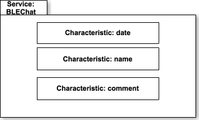
- アドバタイズ
-
ペリフェラルが自身の存在を知らせるために出す「広告」のこと。
アドバタイズパケットの形式で、所定のデータを同報送信（broadcast）する。
※ アドバタイズパケット（advertising packet）は比較的小さなデータバンドルで、ペリフェラルの名前や主な機能など、提供可能なデータを表す情報が入っている。
Central
Ad
Ad
Ad
Ad
Peripheral
- Flow
-
- サービスを作成する。
- アドバタイズを開始する。
- セントラルからの読み込み/書き込み/通知要求に応答する。
Step3: セントラル
- Flow
-
- 該当のサービスを提供しているペリフェラルを検索する。
- ペリフェラルに接続する。
- サービスを検索する。
- サービスの特性を検索する。
- 特性値の読み込み/書き込み/通知要求を行う。
Step4: Core Bluetoothフレームワーク
iOS/Macアプリケーションで、BLEを実装したデバイスと通信するために使用するフレームワーク
Appleのドキュメント
Appleのドキュメント
Step5: ペリフェラルの実装
- ペリフェラルマネージャを生成する。
let peripheralManager = CBPeripheralManager(delegate: self, queue: nil, options: nil) - ペリフェラルマネージャにペリフェラルが提供するサービスや特性を設定する。
func peripheralManagerDidUpdateState(_ peripheral: CBPeripheralManager) { /// サービスを作成 let serviceUUID = CBUUID(string: "00001234-0000-1000-8000-00805f9b34fb") let service = CBMutableService(type: serviceUUID, primary: true) /// サービスUUIDを配列に保存する self.serviceUUIDs.append(serviceUUID) /// 特性を作成 let characteristicUUID = CBUUID(string: "00001234-0001-1000-8000-00805f9b34fb") /// * 重要なデータについてはペアリングした機器からのアクセスのみを許可する let properties: CBCharacteristicProperties = [.notify, .read, .write] let permissions: CBAttributePermissions = [.readable, .writeable] let characteristic = CBMutableCharacteristic(type: characteristicUUID, properties: properties, value: nil, permissions: permissions) /// サービスに特性を設定 service.characteristics = [characteristic] /// ペリフェラルマネージャにサービスを設定 peripheralManager.add(service) } - サービスをアドバタイズする。
/// * アドバタイズするのはデバイスのローカル名とサービスのUUIDだけ let advertisementData = [CBAdvertisementDataLocalNameKey: "Test Device", CBAdvertisementDataServiceUUIDsKey: self.serviceUUIDs] peripheralManager.startAdvertising(advertisementData) -
セントラルからの読み込み要求に応答する。
func peripheralManager(_ peripheral: CBPeripheralManager, didReceiveRead request: CBATTRequest) { if request.characteristic.uuid.isEqual(self.characteristic.uuid) { request.value = self.characteristic.value peripheralManager.respond(to: request, withResult: .success) } }セントラルからの書き込み要求に応答する。func peripheralManager(_ peripheral: CBPeripheralManager, didReceiveWrite requests: [CBATTRequest]) { for request in requests { if request.characteristic.uuid.isEqual(self.characteristic.uuid) { self.characteristic.value = request.value } } peripheralManager.respond(to: requests[0], withResult: .success) }セントラルからの通知要求に応答する。func peripheralManager(_ peripheral: CBPeripheralManager, central: CBCentral, didSubscribeTo characteristic: CBCharacteristic) { }
Step6: セントラルの実装
- セントラルマネージャを生成する。
let centralManager = CBCentralManager(delegate: self, queue: nil, options: nil) - サービスを提供しているペリフェラルを検索する。
func centralManagerDidUpdateState(_ central: CBCentralManager) { switch central.state { case .poweredOn: // CBUUIDオブジェクトの配列を指定すると該当するサービスをアドバタイズしているペリフェラルのみが返される self.centralManager.scanForPeripherals(withServices: [serviceUUID], options: nil) default: return } } - ペリフェラルに接続する。
func centralManager(_ central: CBCentralManager, didDiscover peripheral: CBPeripheral, advertisementData: [String : Any], rssi RSSI: NSNumber) { self.centralManager.connect(peripheral, options: nil) } - サービスを検索する。
func centralManager(_ central: CBCentralManager, didConnect peripheral: CBPeripheral) { /// ペリフェラルとのやり取りを始める前に、ペリフェラルのデリデートをセット peripheral.delegate = self /// サービスの検出開始 /// 不要なサービスが多数見つかる場合、電池と時間が無駄になるので必要なサービスのUUIDを具体的に指定すると良い peripheral.discoverServices([serviceUUID]) } - サービスの特性を検索する。
func peripheral(_ peripheral: CBPeripheral, didDiscoverServices error: Error?) { guard let services = peripheral.services else { return } for service in services { /// 特性を検出する /// 不要な特性が多数見つかる場合、電池と時間が無駄になるので必要な特性のUUIDを具体的に指定する peripheral.discoverCharacteristics([characteristicUUID], for: service) } } -
特性値の読み込みを行う。
func peripheral(_ peripheral: CBPeripheral, didDiscoverCharacteristicsFor service: CBService, error: Error?) { guard let characteristics = service.characteristics else { return } for characteristic in characteristics { if characteristic.properties.contains(.read) { /// 特性値を読み取る peripheral.readValue(for: characteristic) } } }特性値の書き込みを行う。func peripheral(_ peripheral: CBPeripheral, didDiscoverCharacteristicsFor service: CBService, error: Error?) { guard let characteristics = service.characteristics else { return } for characteristic in characteristics { if characteristic.properties.contains(.write) { guard let data = writeTextField.text?.data(using: String.Encoding.utf8) else { return } /// 特性値を書き込む peripheral.writeValue(data, for: characteristic, type: CBCharacteristicWriteType.withResponse) } } }特性値の通知要求を行う。func peripheral(_ peripheral: CBPeripheral, didDiscoverCharacteristicsFor service: CBService, error: Error?) { guard let characteristics = service.characteristics else { return } for characteristic in characteristics { if characteristic.properties.contains(.notify) { /// 特性値が変化したときに通知するよう申し込む peripheral.setNotifyValue(true, for: characteristic) } } }
Step4: 画像を表示する
- 習得事項
- SKSpriteNode、SKTextureを使って画像を表示できる。
- 課題
-
画像を表示変更する。
- SKSpriteNodeを使って画像を表示する。
- SKTextureを使って画像を変更する。
- 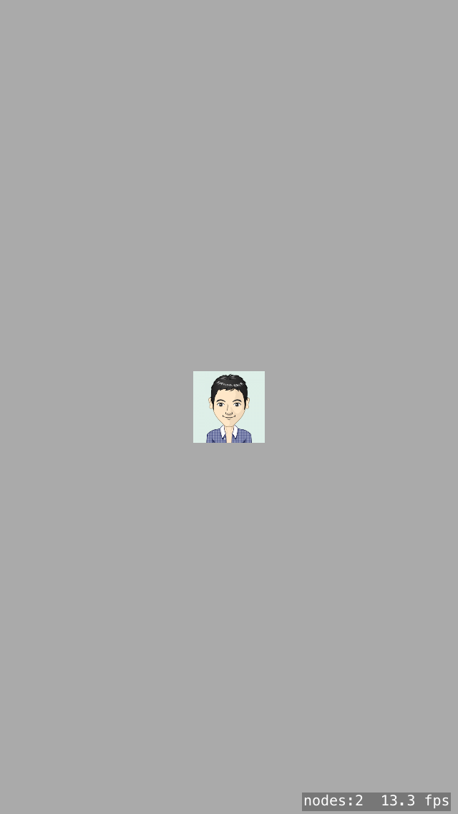
- 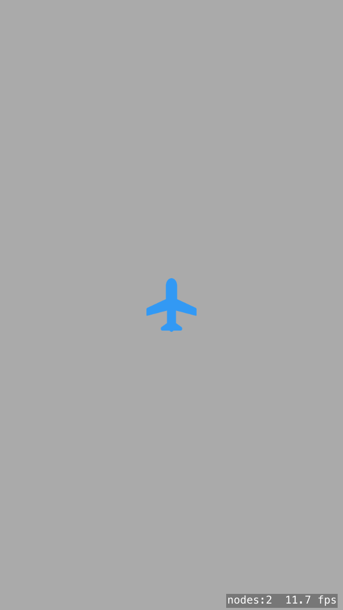

Step5: アニメーション
- 習得事項
- SKActionを使ったアニメーションができる。
- 課題
-
SKActionを使って対象物にアニメーションを付ける。
- SKSpriteNodeを使用しアニメーションの対象物を生成する。
- 対象物を配置する。
- SKActionを使用しアニメーションを作成する。
- 作成したアニメーションを対象物に設定する。
- 補足事項
- 対象物はbackground.pngを使用するためAssets.xcassetsに画像ファイル(background.png)をドラッグアンドドロップする。
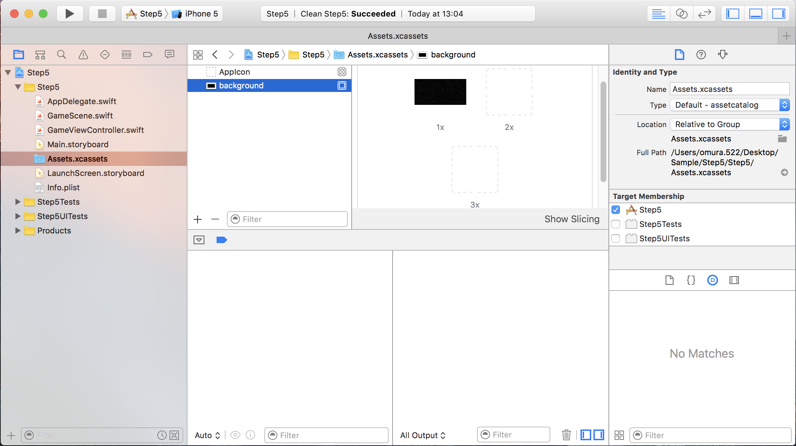
Step6: 物理空間の生成と衝突
- 習得事項
- physicsWorld、physicsBody、SKPhysicsBodyを使って物理空間を生成し、衝突イベントを設定できる。
- 課題
-
physicsWorld、physicsBody、SKPhysicsBodyを使って物理空間を生成し、他物体との衝突イベントを生じさせる。衝突時に一方を消す。
- SKSpriteNodeを使用し対象物を生成する。
- 対象物をランダムに配置する。
- physicsWorld、physicsBody、SKPhysicsBodyを使って物理空間を生成する。
- 衝突イベントを設定する。
- 補足事項
- 対象物はenemy.pngを使用するためAssets.xcassetsに画像ファイル(enemy.png)をドラッグアンドドロップする。
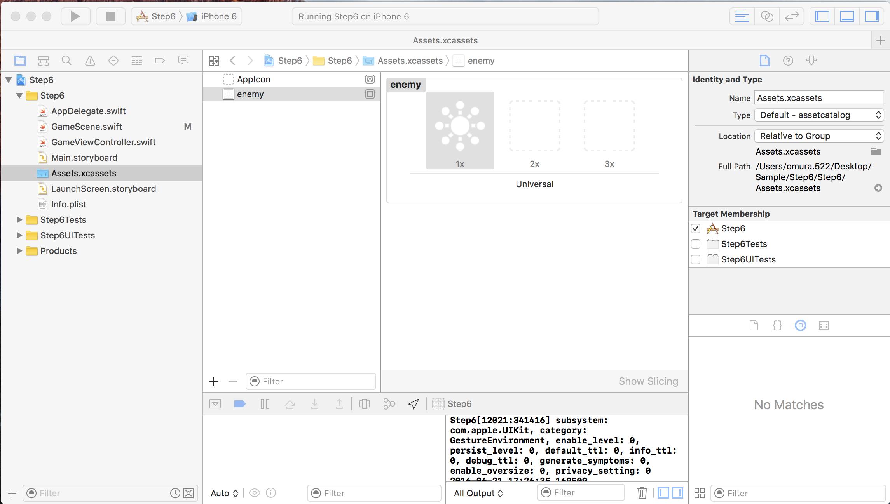
Step7: タップ
- 習得事項
- タップイベントを設定できる。
- 課題
-
タップすると飛行機がタップ位置に移動する。ダブルタップの場合移動後に弾丸を発射する。
- SKSpriteNodeを使用し飛行機を生成し配置する。
- タップ開始イベントを設定する。
- タップ終了イベントを設定する。
- SKShapeNodeを使用し弾丸をタップ位置に生成し、アニメーションを設定する。
Step8: パーティクルと効果音
- 習得事項
- パーティクルと効果音を設定できる。
- 課題
-
タップすると星のパーティクルが発生し、効果音が鳴る。パーティクルは一定時間経つと消える。
- SKEmitterNodeを使用し星のパーティクルを生成する。
- SKActionを設定し効果音をつける。
- タップ開始イベントで1,2を実行する。
- 補足事項
- 星(star.png)と効果音(sound_explosion.mp3)を使用するためAssets.xcassetsに対象ファイルをドラッグアンドドロップする。
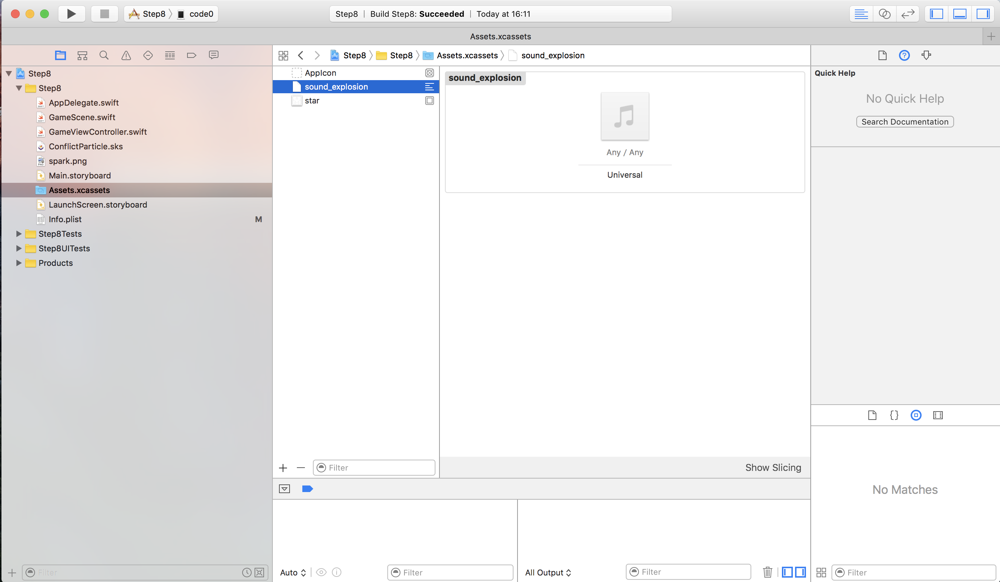
Step9: 加速度センサー
- 習得事項
- 加速度センサーを使用できる。
- 課題
-
端末を傾けると飛行機が横(X軸方向)に移動する。
- SKSpriteNodeを使用して飛行機を生成する。
- Sceneと飛行機に物理空間を設定する。
- 加速度データを使用して飛行機のx方向の移動距離を算出する。
- 1フレームごとに3から飛行機の位置を更新する。
Step10: シーン間の遷移
- 習得事項
- シーン間の遷移ができるようになる。
- 課題
-
3つのシーン(HomeScene、GameScene、ResultScene)を生成して遷移させる。
- 3つのシーンを生成する。
- 遷移イベントのトリガー(タッチ開始イベント)を生成する。
- 遷移元から遷移先にuserDataを使用しデータを渡す。
- 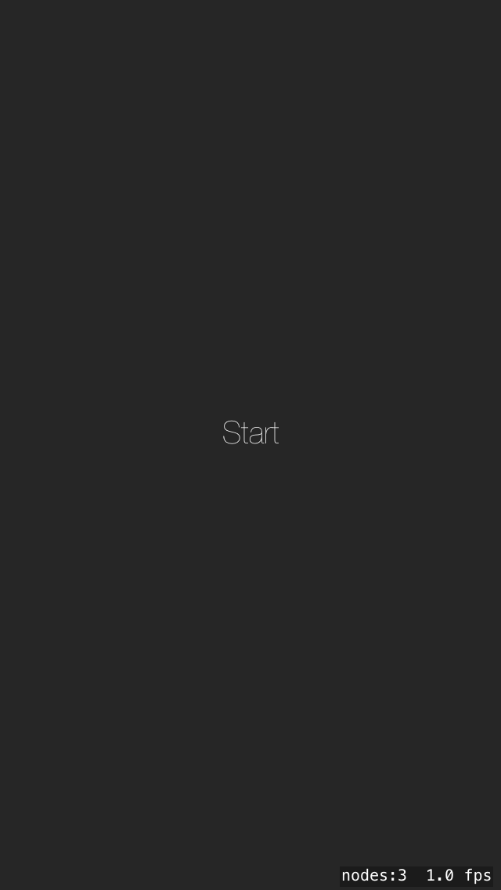
- 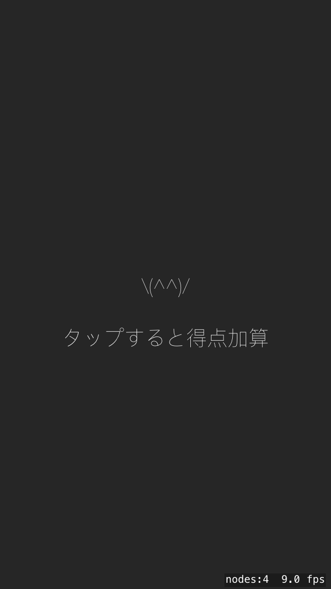
- 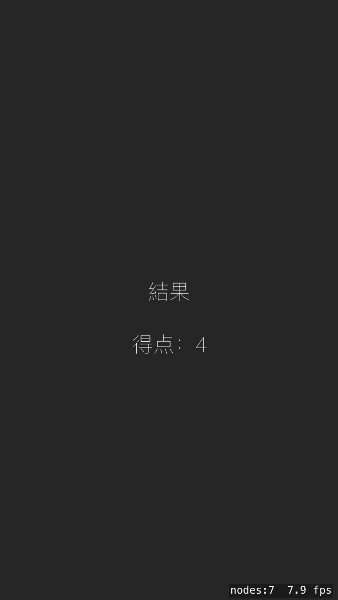
Step11: シューティングゲーム
- 習得事項
- Step1〜10までの機能を組み合わせたプログラム作成ができる。
- 課題
-
シューティングゲームを作成する。
- 3つのシーン(HomeScene,GameScene,ResultScene)を生成する。
- HomeScene
- Startラベルを配置する。
- StartラベルをタップするとGameSceneに遷移する。
- GameScene
- 背景画像を設定する。
- 飛行機を設定する。
- エネミーを設定する。
- 弾丸を設定する。
- パーティクルを設定する。
- 飛行機のステータスを設定する。
- 弾丸のステータスを設定する。
- スコアを設定する。
- 接触時のイベントを設定する。
- タップ開始イベントを設定する。
- ResultSceneのuserDataにスコアを保存する。
- ResultScene
- ゲームオーバー、スコア、再スタートラベルを配置する。
- 再スタートラベルタッチするとGameSceneに遷移する。
- 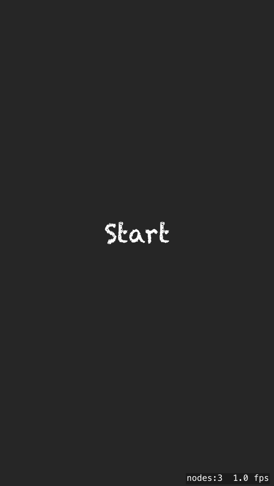
- 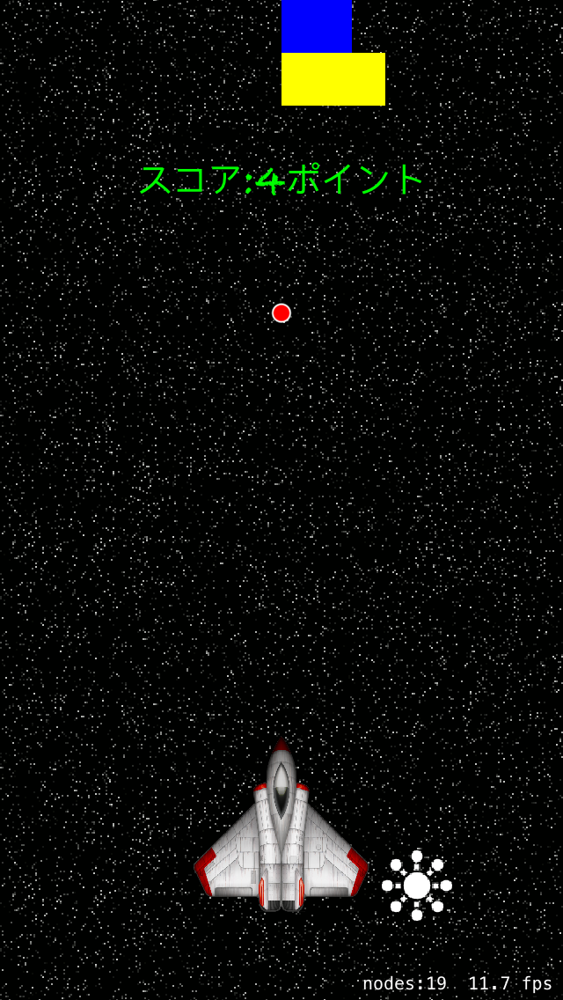
Step12: データの永続化
- 習得事項
- UserDefaultsを使用したデータの永続化ができる。
- 課題
-
タップした回数を保存、参照、削除する。
- 表示数値、数値Up、End、Save, Clearラベルを配置する。
- 数値Upラベルをタップすると表示数値が+1(インクリメント)される。
- Endラベルをタップすると再度GameSceneを表示する。
- Saveラベルをタップすると表示数値を保存する。
- Clearラベルをタップすると保存されている表示数値を削除する。
Step13: シーンとビューコントローラー間の遷移
- 習得事項
- シーンとビューコントローラー間の遷移ができる。
- 課題
-
シーン -> シーン -> ビューコントロラー -> シーン の順で遷移させる。
- FirstViewControllerでStartScene,EndSceneと遷移する。
- NotificationCenterを使ってEndSceneからSecondViewControllerに遷移する。
- SecondViewControllerからFirstViewControllerのStartSceneに遷移する。
- 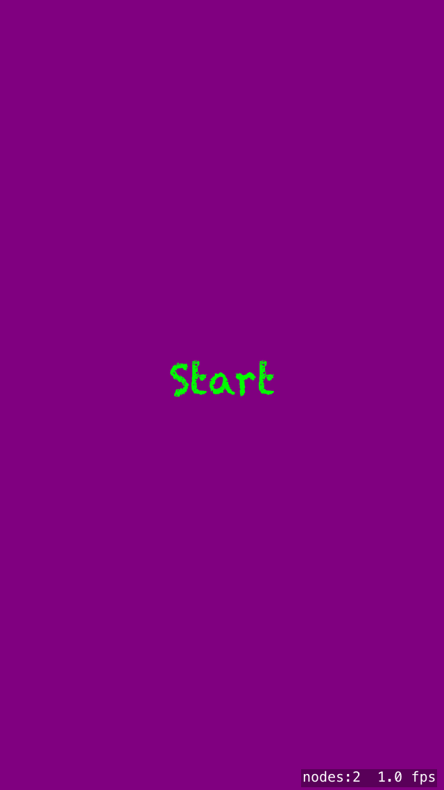
- 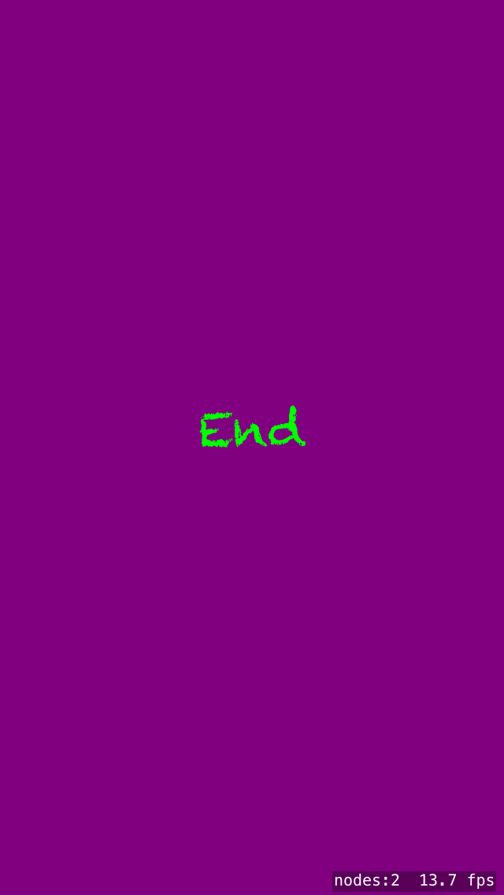
- 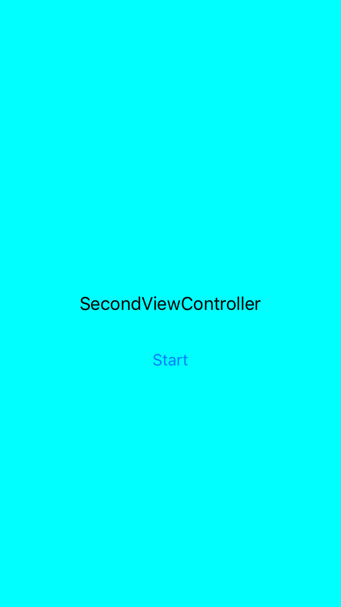
Step14: データの共有
- 習得事項
- FirebaseのAuthとRealtime Databaseを使うことができる。
- 課題
-
認証とデータベースを使用したプログラムを作成する。
- ユーザー登録画面を作成する。(サインイン機能も同一の画面で実装する。)
[構成要素]
- 画面タイトルを表示するためのLabel
- 通知メッセージを表示するためのLabel
- Emailを入力するためのText Field
- Passwordを入力するためのText Field
- Nameを入力するためのText Field
- 登録するためのButton
- サインインするためのButton
- Game画面を作成する。
[構成要素]
- 画面タイトルを表示するためのLabel
- 通知メッセージを表示するためのLabel
- 数値入力のためのText Field
- 数値保存のためのButton
- ランキング画面に遷移するためのButton
- ランキング画面を作成する。
[構成要素]
- 画面タイトルを表示するためのLabel
- 通知メッセージを表示するためのLabel
- ランキングを表示するためのTable View
- サインアウトするためのButton
- 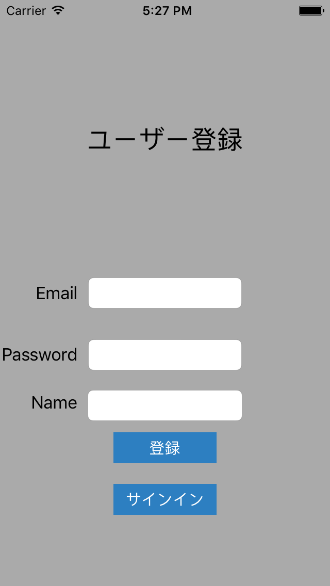
- 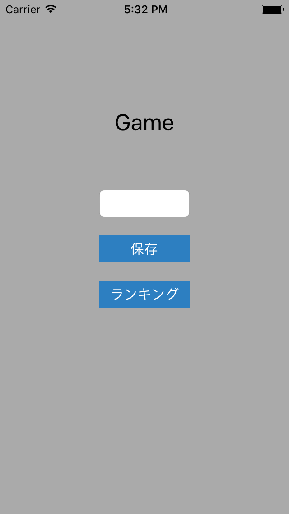
- 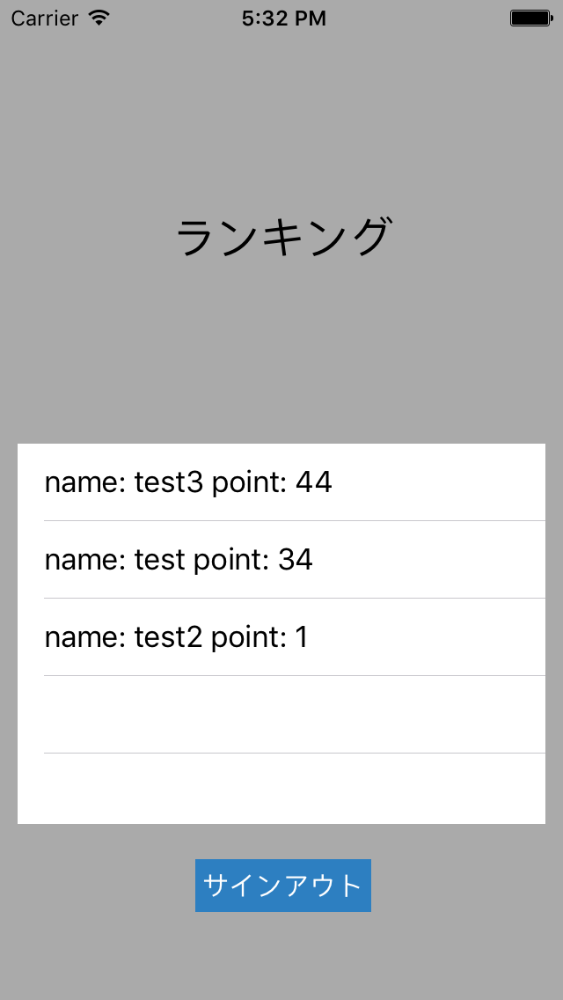
- ユーザー登録画面を作成する。(サインイン機能も同一の画面で実装する。)
- 補足事項
- 外部ライブラリ管理ツール
CocoaPodsの導入
- CocoaPodsをインストールする。
$ sudo gem update --system $ sudo gem install cocoapods - プロジェクトルートでPodfileを作成する。
$ pod init - FirebaseのAuthとRealtime Databaseを使用するためのライブラリをPodfileに記入する。
target 'Project' do use_frameworks! pod 'Firebase' pod 'Firebase/Auth' pod 'Firebase/Database' target 'ProjectTests' do inherit! :search_paths # Pods for testing end target 'ProjectUITests' do inherit! :search_paths # Pods for testing end end - Podfileに記入したライブラリをインストールする。
$ pod install - 以後Xcodeの起動は.xcworkspaceから行うこと。
- CocoaPodsをインストールする。
- Mobile Backend as a Service（MBaas）
Firebaseの導入
- Googleアカウントでサインインする。
- 新規プロジェクトの作成する。
- iOSアプリにFirebaseを追加する。
- ダウンロードしたGoogleService-Info.plistをプロジェクトルートに配置する。
- メインのAppDelegateクラスに初期化コードを追加する。
import UIKit import Firebase // 追加 @UIApplicationMain class AppDelegate: UIResponder, UIApplicationDelegate { var window: UIWindow? func application(application: UIApplication, didFinishLaunchingWithOptions launchOptions: [NSObject: AnyObject]?) -> Bool { FIRApp.configure() // 追加 return true } } - 管理画面 Authentication > ログイン方法でメール/パスワードでのプロバイダにログインを有効にする。